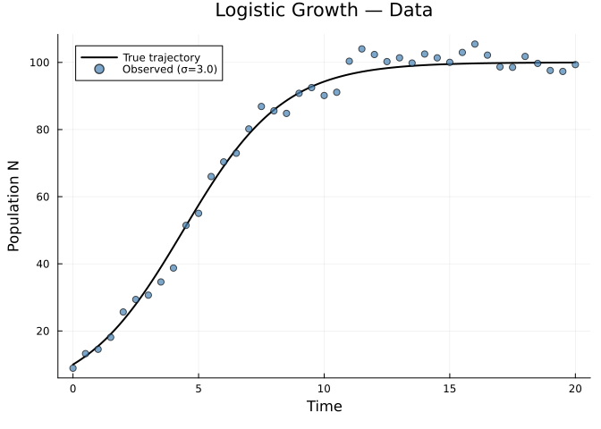
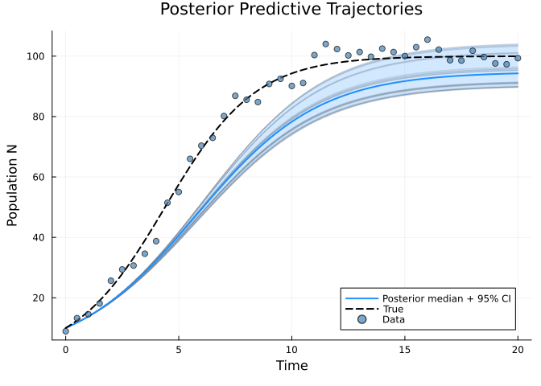
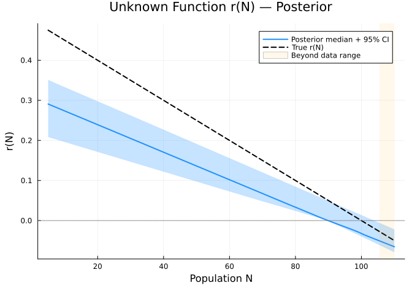
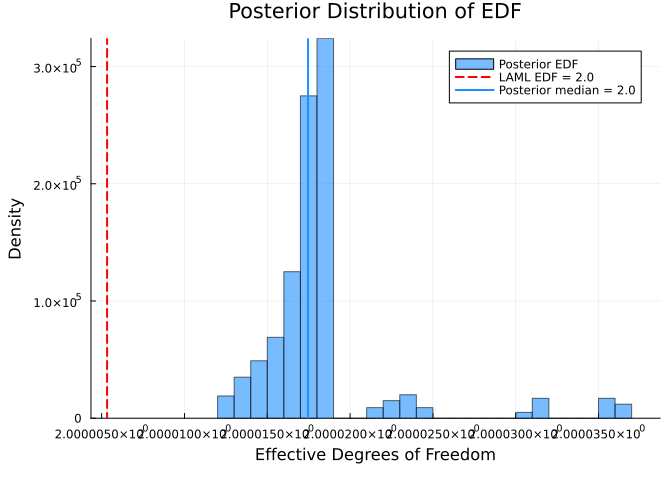
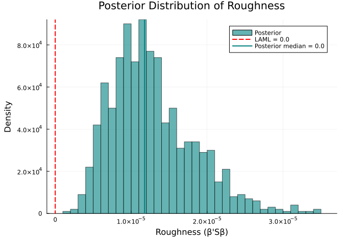
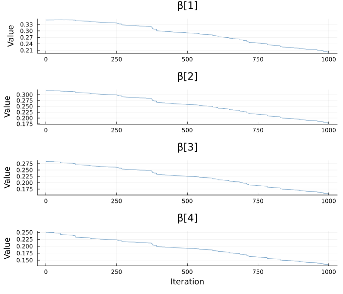
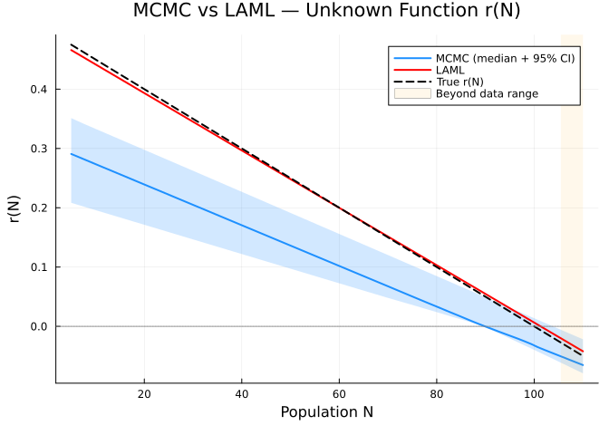
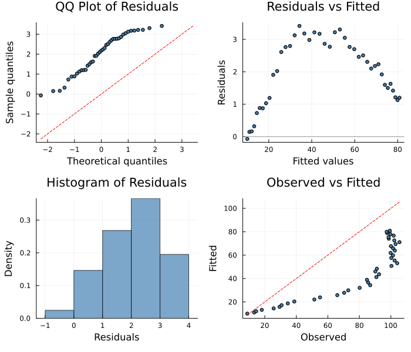

Bayesian Inference with MCMCSolver
Overview
While point estimation via LAML or Adam is fast, fully Bayesian inference quantifies uncertainty in both parameter estimates and unknown function reconstructions. MCMCSolver uses the No-U-Turn Sampler (NUTS) to draw posterior samples, returning an MCMCChains.Chains object for downstream analysis.
This vignette demonstrates:
- Setting up a PSM for Bayesian inference
- Calibrating the MCMC prior using LAML’s smoothing parameter
- Posterior trajectory predictions and credible intervals
- Computing the posterior distribution of effective degrees of freedom (EDF)
- Comparing MCMC and LAML estimates
Example: Logistic Growth with Unknown Carrying Capacity
We model population growth where the per-capita growth rate r(N) is unknown — it should decrease as N approaches carrying capacity K.
True model: dN/dt = r(N) · N where r(N) = r₀(1 - N/K) with r₀ = 0.5, K = 100.
using PartiallySpecifiedModels
using OrdinaryDiffEq
using Plots
using Statistics
using LinearAlgebra
using MCMCChains
using Random
Random.seed!(42)
# NaN-safe helpers
nanmedian(x) = median(filter(!isnan, x))
nanquantile(x, q) = quantile(filter(!isnan, x), q)nanquantile (generic function with 1 method)Generate Synthetic Data
function logistic!(du, u, p, t)
du[1] = p.r(u[1]) * u[1]
end
# True per-capita rate: r(N) = 0.5 * (1 - N/100)
r_true(N) = 0.5 * (1.0 - N / 100.0)
true_p = (; r = r_true)
tspan = (0.0, 20.0)
sol_true = solve(ODEProblem(logistic!, [10.0], tspan, true_p), Tsit5(); saveat=0.5)
t_data = sol_true.t
N_true = [u[1] for u in sol_true.u]
σ_noise = 3.0
N_obs = N_true .+ σ_noise .* randn(length(N_true))
N_obs = max.(N_obs, 0.1) # keep positive
data_matrix = reshape(N_obs, :, 1)
println("Population range in data: [$(round(minimum(N_obs), digits=1)), $(round(maximum(N_obs), digits=1))]")Population range in data: [8.9, 105.5]Plot the Data
t_fine = range(tspan..., length=200)
sol_fine = solve(ODEProblem(logistic!, [10.0], tspan, true_p), Tsit5(); saveat=collect(t_fine))
N_fine = [u[1] for u in sol_fine.u]
p_data = plot(t_fine, N_fine, label="True trajectory", lw=2, color=:black,
xlabel="Time", ylabel="Population N",
title="Logistic Growth — Data")
scatter!(p_data, t_data, N_obs, label="Observed (σ=$σ_noise)", ms=4, color=:steelblue, alpha=0.7)
p_data
Figure 1: Observed data (circles) vs true trajectory (line)
Set Up PSM Problem
An important consideration with nonparametric unknown functions is that estimation is only reliable where data is informative. The population in this model ranges from ~10 to ~105, so we set the B-spline domain to (5, 110) — slightly beyond the observed data range, but not so far that large extrapolation regions dominate the fit.
We use 12 knots to give the spline enough flexibility to capture the shape of r(N) across the full data range.
N_lo, N_hi = 5.0, 110.0
n_knots = 12
uf_r = BSplineApproximator(:r, (N_lo, N_hi), n_knots; initial=0.3)
prob = PSMProblem(logistic!, [10.0], tspan, [uf_r];
data_times=collect(t_data),
data_values=Float64.(data_matrix),
obs_to_state=[1],
known_params=NamedTuple(),
likelihood=PartiallySpecifiedModels.Gaussian())PSMProblem{typeof(logistic!), Vector{Float64}, Gaussian, Tsit5{typeof(OrdinaryDiffEqCore.trivial_limiter!), typeof(OrdinaryDiffEqCore.trivial_limiter!), Static.False}}(logistic!, [10.0], (0.0, 20.0), BSplineApproximator[BSplineApproximator(:r, (5.0, 110.0), 12, PartiallySpecifiedModels.var"#6#7"{Float64}(0.3))], [0.0, 0.5, 1.0, 1.5, 2.0, 2.5, 3.0, 3.5, 4.0, 4.5 … 15.5, 16.0, 16.5, 17.0, 17.5, 18.0, 18.5, 19.0, 19.5, 20.0], [8.909927555644668; 13.240842524024732; … ; 97.31083844618732; 99.33886943440814;;], [1.0; 1.0; … ; 1.0; 1.0;;], [1], NamedTuple(), Gaussian(), Tsit5{typeof(OrdinaryDiffEqCore.trivial_limiter!), typeof(OrdinaryDiffEqCore.trivial_limiter!), Static.False}(OrdinaryDiffEqCore.trivial_limiter!, OrdinaryDiffEqCore.trivial_limiter!, static(false)), Dict{Symbol, Any}(), false, Float64[], nothing)Step 1: Run LAML to Calibrate Smoothing
Before running MCMC, we first fit with LAML to obtain the data-driven smoothing parameter λ. This will inform the MCMC prior.
sol_laml = solve(prob, LAML(maxiters=200, verbose=false))
λ_laml = sol_laml.smoothing_params[1]
edf_laml = sol_laml.edf
println("LAML smoothing parameter: λ = $(round(λ_laml, digits=4))")
println("LAML effective degrees of freedom: EDF = $(round(edf_laml, digits=2))")LAML smoothing parameter: λ = 2.57324221537e7
LAML effective degrees of freedom: EDF = 2.0Why Smoothing Matters for MCMC
The MCMCSolver places a smoothing prior on the B-spline coefficients:
\[\log p(\boldsymbol{\beta} | \lambda) \propto -\frac{\lambda}{2} \boldsymbol{\beta}^\top \mathbf{S} \boldsymbol{\beta}\]
where S is the second-derivative penalty matrix. The prior_scale parameter controls this: the effective λ = 1/prior_scale. If prior_scale is too large (penalty too weak), the posterior samples will be wigglier than the LAML estimate, because there is insufficient smoothing.
We calibrate prior_scale = 1/λ_LAML so the MCMC prior matches the data-driven smoothing:
prior_scale_calibrated = 1.0 / λ_laml
println("Calibrated prior_scale = 1/λ = $(round(prior_scale_calibrated, digits=6))")Calibrated prior_scale = 1/λ = 0.0Step 2: Run MCMCSolver with Calibrated Prior
sol = solve(prob, MCMCSolver(
n_samples=1000, n_warmup=500,
target_accept=0.8,
prior_scale=prior_scale_calibrated,
verbose=false))PSMSolution((r = [0.00997246136781523, 0.0087439984159119, 0.007542375903582127, 0.006372341379794244, 0.005214941464631835, 0.004057934814135894, 0.0029051163876757263, 0.001781870013770156, 0.0006243746930021479, -0.0005277787070219048, -0.0016953425948657045, -0.0028355774290577942]), 2568.794465563477, 215667.25988196032, 12.0, [6.601048255426268], [10.0; 10.046728910201363; … ; 11.965868256224047; 12.020261108404647;;], [8.909927555644668; 13.240842524024732; … ; 97.31083844618732; 99.33886943440814;;], [0.0, 0.5, 1.0, 1.5, 2.0, 2.5, 3.0, 3.5, 4.0, 4.5 … 15.5, 16.0, 16.5, 17.0, 17.5, 18.0, 18.5, 19.0, 19.5, 20.0], Dict{Symbol, Any}(:r => DataInterpolations.CubicSpline{Vector{Float64}, Vector{Float64}, Vector{Float64}, Vector{Float64}, Vector{Float64}, Vector{Float64}, Float64}([0.00997246136781523, 0.0087439984159119, 0.007542375903582127, 0.006372341379794244, 0.005214941464631835, 0.004057934814135894, 0.0029051163876757263, 0.001781870013770156, 0.0006243746930021479, -0.0005277787070219048, -0.0016953425948657045, -0.0028355774290577942], [5.0, 14.545454545454545, 24.09090909090909, 33.63636363636363, 43.18181818181818, 52.72727272727273, 62.27272727272727, 71.81818181818181, 81.36363636363636, 90.9090909090909, 100.45454545454545, 110.0], Float64[], DataInterpolations.CubicSplineParameterCache{Vector{Float64}}(Float64[], Float64[]), [0.0, 9.545454545454545, 9.545454545454545, 9.545454545454543, 9.545454545454547, 9.545454545454547, 9.545454545454547, 9.54545454545454, 9.545454545454547, 9.545454545454547, 9.545454545454547, 9.545454545454547], [0.0, 3.39533519617155e-7, 4.09317996851348e-7, 1.0327428267464272e-7, 9.578147923501055e-9, -1.1569026231818112e-7, 7.289788786708437e-7, -8.52895533123714e-7, 4.2729845363086487e-7, -5.045309834304324e-7, 5.760396154980055e-7, 0.0], DataInterpolations.ExtrapolationType.Linear, DataInterpolations.ExtrapolationType.Linear, FindFirstFunctions.Guesser{Vector{Float64}}([5.0, 14.545454545454545, 24.09090909090909, 33.63636363636363, 43.18181818181818, 52.72727272727273, 62.27272727272727, 71.81818181818181, 81.36363636363636, 90.9090909090909, 100.45454545454545, 110.0], Base.RefValue{Int64}(1), true), false, false)), MCMC chain (1000×13×1 Array{Float64, 3}))Posterior Trajectory Predictions
We draw posterior predictive trajectories by simulating the ODE for each MCMC sample:
chains = sol.convergence
sample_matrix = Array(chains)
n_samp = size(sample_matrix, 1)
np = nparams(uf_r)
n_plot = min(n_samp, 200)
t_pred = collect(range(tspan..., length=100))
trajectories = zeros(n_plot, length(t_pred))
knots_x = collect(range(N_lo, N_hi, length=uf_r.nknots))
for i in 1:n_plot
params_i = sample_matrix[i, 1:np]
ev = PartiallySpecifiedModels.build_bspline_evaluator(knots_x, params_i)
try
pred = solve(ODEProblem(logistic!, [10.0], tspan, (; r = ev)), Tsit5();
saveat=t_pred, abstol=1e-8, reltol=1e-8)
trajectories[i, :] = [u[1] for u in pred.u]
catch
trajectories[i, :] .= NaN
end
endp_traj = plot(xlabel="Time", ylabel="Population N",
title="Posterior Predictive Trajectories", legend=:bottomright)
for i in 1:n_plot
plot!(p_traj, t_pred, trajectories[i, :], color=:grey, alpha=0.05, label="")
end
traj_med = [nanmedian(trajectories[:, j]) for j in 1:length(t_pred)]
traj_lo = [nanquantile(trajectories[:, j], 0.025) for j in 1:length(t_pred)]
traj_hi = [nanquantile(trajectories[:, j], 0.975) for j in 1:length(t_pred)]
plot!(p_traj, t_pred, traj_med, ribbon=(traj_med .- traj_lo, traj_hi .- traj_med),
fillalpha=0.2, color=:dodgerblue, lw=2, label="Posterior median + 95% CI")
plot!(p_traj, t_fine, N_fine, color=:black, lw=2, ls=:dash, label="True")
scatter!(p_traj, t_data, N_obs, ms=4, color=:steelblue, alpha=0.7, label="Data")
p_traj
Figure 2: Posterior predictive trajectories (grey) with data and true trajectory
Unknown Function Credible Intervals
N_range = range(N_lo, N_hi, length=80)
r_samples = zeros(n_samp, length(N_range))
for i in 1:n_samp
params_i = sample_matrix[i, 1:np]
ev = PartiallySpecifiedModels.build_bspline_evaluator(knots_x, params_i)
for (j, N) in enumerate(N_range)
r_samples[i, j] = ev(N)
end
end
r_lower = [quantile(r_samples[:, j], 0.025) for j in 1:length(N_range)]
r_upper = [quantile(r_samples[:, j], 0.975) for j in 1:length(N_range)]
r_median = [quantile(r_samples[:, j], 0.5) for j in 1:length(N_range)]
r_true_vals = [r_true(N) for N in N_range]80-element Vector{Float64}:
0.475
0.46835443037974683
0.4617088607594937
0.4550632911392405
0.44841772151898734
0.4417721518987342
0.435126582278481
0.42848101265822786
0.4218354430379747
0.4151898734177215
⋮
0.0031645569620253333
-0.0034810126582278667
-0.010126582278480956
-0.016772151898734156
-0.023417721518987356
-0.030063291139240556
-0.036708860759493644
-0.043354430379746844
-0.050000000000000044N_data_max = maximum(N_obs)
p_uf = plot(collect(N_range), r_median, ribbon=(r_median .- r_lower, r_upper .- r_median),
fillalpha=0.25, color=:dodgerblue, lw=2, label="Posterior median + 95% CI",
xlabel="Population N", ylabel="r(N)",
title="Unknown Function r(N) — Posterior")
plot!(p_uf, collect(N_range), r_true_vals, color=:black, lw=2, ls=:dash, label="True r(N)")
hline!(p_uf, [0.0], color=:grey, ls=:dot, label="")
vspan!(p_uf, [N_data_max, N_hi], color=:orange, alpha=0.08, label="Beyond data range")
p_uf
Figure 3: Posterior credible interval for the unknown function r(N)
Posterior Distribution of Effective Degrees of Freedom
The effective degrees of freedom (EDF) measures the complexity of the fitted spline. For a penalized spline with penalty matrix S and smoothing parameter λ, the EDF is:
\[\text{EDF} = \text{tr}\left[(\mathbf{J}^\top \mathbf{W} \mathbf{J} + \lambda \mathbf{S})^{-1} \mathbf{J}^\top \mathbf{W} \mathbf{J}\right]\]
We compute a posterior distribution of EDF by evaluating this at each MCMC sample. Since the Jacobian J depends on the ODE solution (which changes with each sample), we use a finite-difference approximation:
# Penalty matrix — must use penalty_matrix(uf_r) which uses unit-interval
# knots, matching what the LAML solver uses internally
S = penalty_matrix(uf_r)
λ_eff = λ_laml # effective λ = 1/prior_scale_calibrated = λ_laml
# Compute posterior EDF for each sample
edf_posterior = zeros(n_samp)
roughness = zeros(n_samp)
for i in 1:n_samp
beta_i = sample_matrix[i, 1:np]
roughness[i] = dot(beta_i, S * beta_i)
ev_i = PartiallySpecifiedModels.build_bspline_evaluator(knots_x, beta_i)
try
pred_i = solve(ODEProblem(logistic!, [10.0], tspan, (; r = ev_i)), Tsit5();
saveat=collect(t_data), abstol=1e-8, reltol=1e-8)
y_base = [pred_i[1, k] for k in 1:length(t_data)]
# Jacobian via forward finite differences
J_i = zeros(length(t_data), np)
ε = 1e-5
for p_idx in 1:np
beta_pert = copy(beta_i)
beta_pert[p_idx] += ε
ev_pert = PartiallySpecifiedModels.build_bspline_evaluator(knots_x, beta_pert)
pred_pert = solve(ODEProblem(logistic!, [10.0], tspan, (; r = ev_pert)), Tsit5();
saveat=collect(t_data), abstol=1e-8, reltol=1e-8)
J_i[:, p_idx] = ([pred_pert[1, k] for k in 1:length(t_data)] .- y_base) ./ ε
end
JWJ = J_i' * J_i
H_i = JWJ + λ_eff * S
edf_posterior[i] = tr(H_i \ JWJ)
catch
edf_posterior[i] = NaN
end
end
edf_valid = filter(!isnan, edf_posterior)1000-element Vector{Float64}:
2.000202981594369
2.0002036410918946
2.000203582786047
2.0002035576637764
2.000203155809783
2.000203089735372
2.000202928278206
2.0002033006065894
2.000202321135682
2.000202221480372
⋮
2.00009768751402
2.000062576983788
2.0000575023013165
2.0000943714134563
1.9999855378827338
1.9999529071193263
2.0000000239155233
1.9999132079865987
2.0000207079240124p_edf = histogram(edf_valid, bins=30, normalize=:pdf, alpha=0.6, color=:dodgerblue,
xlabel="Effective Degrees of Freedom", ylabel="Density",
title="Posterior Distribution of EDF", label="Posterior EDF")
vline!(p_edf, [edf_laml], color=:red, lw=2, ls=:dash,
label="LAML EDF = $(round(edf_laml, digits=2))")
vline!(p_edf, [median(edf_valid)], color=:dodgerblue, lw=2,
label="Posterior median = $(round(median(edf_valid), digits=2))")
p_edf
Figure 4: Posterior distribution of effective degrees of freedom (EDF)
EDF summary:
LAML point estimate: 2.0
Posterior median: 2.0
Posterior mean: 2.0
95% CI: [2.0, 2.0]Posterior Roughness
The roughness penalty β'Sβ provides a direct measure of function complexity — higher values mean a wigglier estimated function:
p_rough = histogram(roughness, bins=30, normalize=:pdf, alpha=0.6, color=:teal,
xlabel="Roughness (β'Sβ)", ylabel="Density",
title="Posterior Distribution of Roughness", label="Posterior")
β_laml = collect(sol_laml.parameters)[1:np]
roughness_laml = dot(β_laml, S * β_laml)
vline!(p_rough, [roughness_laml], color=:red, lw=2, ls=:dash,
label="LAML = $(round(roughness_laml, digits=4))")
vline!(p_rough, [median(roughness)], color=:teal, lw=2,
label="Posterior median = $(round(median(roughness), digits=4))")
p_rough
Figure 5: Posterior distribution of spline roughness β’Sβ
Posterior Diagnostics
Trace Plots
param_names = names(chains, :parameters)
n_show = min(4, length(param_names))
p_traces = plot(layout=(n_show, 1), size=(700, 150 * n_show))
for i in 1:n_show
vals = Array(chains[:, param_names[i], :])[:, 1]
plot!(p_traces, vals, subplot=i, label="", color=:steelblue, alpha=0.7,
title="β[$i]",
xlabel= i == n_show ? "Iteration" : "", ylabel="Value")
end
p_traces
Figure 6: Trace plots for selected B-spline coefficients
Numerical Summary
Posterior r(N) at selected points:
r(10): median=0.2169 [0.0099, 0.3344] (true: 0.45)
r(25): median=0.1834 [0.0078, 0.3015] (true: 0.375)
r(50): median=0.1255 [0.0042, 0.2444] (true: 0.25)
r(75): median=0.0676 [-0.0003, 0.1869] (true: 0.125)
r(100): median=0.0127 [-0.0107, 0.132] (true: 0.0)Comparison with LAML
r_laml = sol_laml.unknown_functions[:r]
r_laml_vals = [r_laml(N) for N in N_range]80-element Vector{Float64}:
0.46591988809169416
0.4594898611794377
0.4530598342665788
0.44662980735251495
0.4401997804366437
0.43376975351836256
0.42733972659706915
0.4209096996721609
0.41447967274234865
0.4080496458015535
⋮
0.009387389568488357
0.0029573414586758686
-0.0034727067617698467
-0.009902755076195185
-0.016332803468936875
-0.022762851924331712
-0.029192900426716295
-0.03562294896042742
-0.042052997509801814p_comp = plot(collect(N_range), r_median, ribbon=(r_median .- r_lower, r_upper .- r_median),
fillalpha=0.2, color=:dodgerblue, lw=2, label="MCMC (median + 95% CI)",
xlabel="Population N", ylabel="r(N)",
title="MCMC vs LAML — Unknown Function r(N)")
plot!(p_comp, collect(N_range), r_laml_vals, color=:red, lw=2, label="LAML")
plot!(p_comp, collect(N_range), r_true_vals, color=:black, lw=2, ls=:dash, label="True r(N)")
hline!(p_comp, [0.0], color=:grey, ls=:dot, label="")
vspan!(p_comp, [N_data_max, N_hi], color=:orange, alpha=0.08, label="Beyond data range")
p_comp
Figure 7: MCMC posterior vs LAML point estimate for r(N)
Discussion
Why MCMC can be wigglier than LAML: The key difference is how smoothing is handled:
- LAML optimizes the smoothing parameter λ by maximizing the Laplace-approximate marginal likelihood. This automatically balances data fit against complexity, and λ is estimated from the data.
- MCMCSolver uses λ as a fixed prior hyperparameter (
prior_scale = 1/λ). If this is set too low (weak penalty), the posterior samples will be undersmoothed and wiggly.
The solution demonstrated here is to calibrate the MCMC prior using LAML’s estimate: run LAML first, extract the optimal λ, then set prior_scale = 1/λ. This gives MCMC posterior samples with comparable smoothness, while still providing full uncertainty quantification.
Posterior EDF interpretation: The EDF distribution shows how much complexity the data supports. Values close to the number of knots indicate overfitting risk, while low values suggest the function is well-constrained. The posterior spread in EDF reflects uncertainty about model complexity — a feature unique to Bayesian approaches.
Diagnostic Plots
A standard 4-panel diagnostic display assesses residual behaviour for the MCMC fit. The QQ plot checks normality of standardized residuals, “Residuals vs Fitted” detects systematic patterns, the histogram visualises the residual distribution, and “Observed vs Fitted” checks overall calibration.
using PartiallySpecifiedModels: appraise
diag = appraise(sol)
p_qq = scatter(diag.qq_theoretical, diag.qq_sample,
xlabel="Theoretical quantiles", ylabel="Sample quantiles",
title="QQ Plot of Residuals", ms=3, legend=false, color=:steelblue)
mn, mx = extrema(vcat(diag.qq_theoretical, diag.qq_sample))
plot!(p_qq, [mn, mx], [mn, mx], color=:red, ls=:dash, label="")
p_rf = scatter(diag.fitted, diag.residuals,
xlabel="Fitted values", ylabel="Residuals",
title="Residuals vs Fitted", ms=3, legend=false, color=:steelblue)
hline!(p_rf, [0], color=:gray, ls=:dot)
p_hist = histogram(diag.residuals, normalize=:pdf,
xlabel="Residuals", ylabel="Density",
title="Histogram of Residuals", legend=false, color=:steelblue, alpha=0.7)
p_of = scatter(diag.observed, diag.fitted,
xlabel="Observed", ylabel="Fitted",
title="Observed vs Fitted", ms=3, legend=false, color=:steelblue)
mn2, mx2 = extrema(vcat(diag.observed, diag.fitted))
plot!(p_of, [mn2, mx2], [mn2, mx2], color=:red, ls=:dash, label="")
plot(p_qq, p_rf, p_hist, p_of, layout=(2, 2), size=(700, 600))
Durbin-Watson: 0.004[!TIP]
See Also
- Vignette 19: Pseudo-Marginal — Bayesian inference with probabilistic ODE likelihood
- Vignette 24: Variational — fast approximate Bayesian inference
- Vignette 29: Bootstrap — frequentist uncertainty via resampling
Summary
| Feature | MCMCSolver |
|---|---|
| Inference type | Fully Bayesian (NUTS/HMC) |
| Output | MCMCChains.Chains |
| Uncertainty | Full posterior, credible intervals |
| Prior calibration | Use prior_scale = 1/λ_LAML for appropriate smoothing |
| EDF | Posterior distribution via hat matrix at each sample |
| Best for | Uncertainty quantification, model comparison |
MCMCSolver complements the point estimation solvers (LAML, Adam) by providing full posterior distributions. For best results, calibrate the smoothing prior using LAML’s data-driven λ estimate.